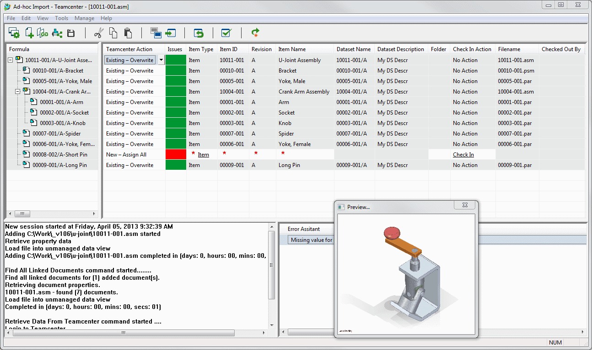

The application interface
Add to Teamcenter Interactive utilizes an interface consisting of four window panes to interactively add unmanaged Solid Edge design data to Teamcenter.
The Add to Teamcenter Interactive window
The Add to Teamcenter Interactive window consists of four window panes. The pane in the upper-left quadrant contains the unmnaged list of your documents. The window pane in the upper-right quadrant displays content from Teamcenter much like common property dialog boxes in Solid Edge Embedded Client. This gives you a side-by-side comparison of unmanaged and managed data. There is a slider beneath the two window panes so you can scroll to view additional columns of information.
The lower-left and lower-right window panes contain the Progress Log and Error Assistant.

The Preview for both unmanaged and managed documents displays in a free floating window.
For information about the commands buttons, see Using the Add to Teamcenter Interactive toolbar.
Learn more
Using Teamcenter in Solid EdgeUser Session Information
Starting the application
User Session Information
Using the Add to Teamcenter Interactive toolbar
Error Assistant
Technical support